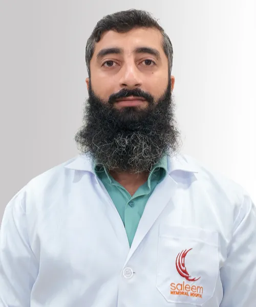

Brain Disorders
Brain tumors, hydrocephalus, persistent headaches and other neurological concerns.
CONSULTANT NEUROSURGEON • LAHORE
MD (USA) • FCPS (Neurosurgery)
Specialist in Brain & Spine Disorders, providing professional consultation for neurological and neurosurgical conditions.

ABOUT THE DOCTOR
Dr. Muhammad Jamil Sarwar is a Consultant Neurosurgeon with qualifications including MD (USA) and FCPS (Neurosurgery). His clinical focus includes disorders affecting the brain, spine, spinal cord and related nerves.
SPECIALIST CARE
Brain tumors, hydrocephalus, persistent headaches and other neurological concerns.
Epilepsy management and seizure care.
Back pain, Sciatica, vertebral fractures, spinal tumors and spinal cord conditions.
Head and back injuries, spinal infections, abscesses and related complications.
HEALTH GUIDES & ARTICLES
Explore our detailed medical articles to understand various neurological and spinal conditions better.
Learn about brain tumors, early warning signs, diagnosis, and expert neurosurgical management options.
Read Full Article →Comprehensive guide on epilepsy management, seizure triggers, medications, and specialized care.
Read Full Article →Discover the causes of sciatica nerve pain, spine alignment issues, and effective treatment strategies.
Read Full Article →Important medical insights regarding traumatic head and back injuries, infections, and prompt surgical care.
Read Full Article →This website provides general information and is not a substitute for an in-person medical assessment. Diagnosis and treatment should be decided by a qualified doctor after appropriate evaluation.
INFORMATIVE VIDEO
Watch this informative video by Dr. Muhammad Jamil Sarwar, Consultant Neurosurgeon in Lahore.
CLINIC INFORMATION
For appointment booking, call Saleem Memorial Hospital at 042 35921199.
Call for Appointment View on Google Maps